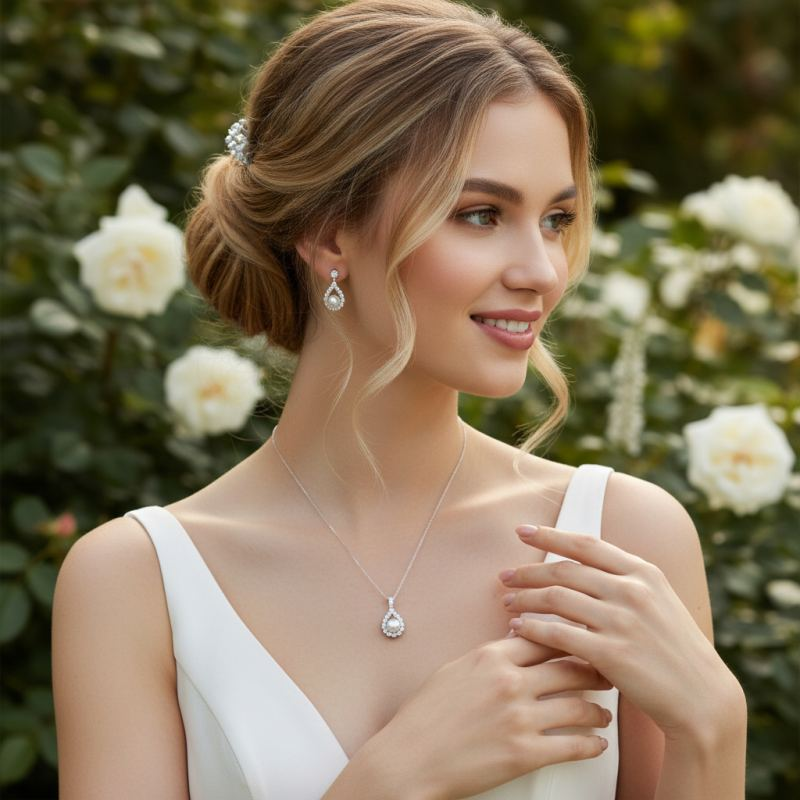
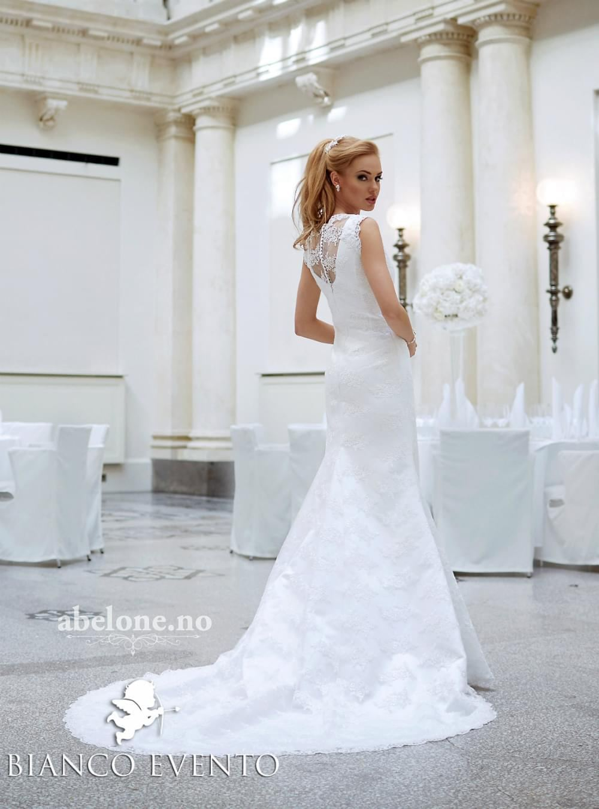

Forside · Søm og tilpasning
Søm, tilpasning og redesign
Syatelieret ligger i etasjen over salongen. Det betyr at kjolen sjelden forlater huset før den sitter som den skal — og at du kan snakke med den som syr.
Hva vi gjør
Alt fra et opplegg til full omsøm
De fleste kjoler trenger noen justeringer for å sitte perfekt. Noen ganger er det bare lengden, andre ganger skal det mer til.
- Legge opp lengde og tilpasse slep
- Sy inn eller ut livet, og flytte snøring
- Endre utringning, ermer og stropper
- Montere belte, slør og kappe
- Brodering av navn og dato
- Damp og press før dagen

Redesign
Fra brudekjole til dåpskjole
Stoffet, blonden og minnene blir med videre. Vi syr om mors eller bestemors brudekjole til en dåpskjole og lue som kan gå i arv.
- 01
Vi ser på kjolen
Ta med brudekjolen innom. Vi vurderer stoff, slitasje og hva som kan brukes videre.
- 02
Vi tegner forslaget
Du får en skisse av dåpskjolen og luen før vi klipper. Ingenting ødelegges uten at du har sagt ja.
- 03
Vi syr og broderer
Navn og dato broderes på dåpskjolen. Ferdig arbeid tar tre til seks uker.

Priser og tid
Klare priser, ingen overraskelser
Vi gir deg en skriftlig pris før vi begynner. Endringer underveis avtales alltid på forhånd.
Normal tid er tre til fire uker. I høysesong fra mai til august bør du beregne litt mer.
Ofte spurt om søm
Det folk lurer på
Kan jeg levere kjolen min uansett merke?
Ja. Vi syr på alle kjoler, også de du har kjøpt et annet sted.
Hvor mange tilpasninger trenger jeg?
De fleste trenger to prøver: en for å måle og en for å kontrollere. Skal kjolen sys vesentlig om, blir det tre.
Kan dere sy en ny kjole fra bunnen?
Vi syr om og tilpasser, men lager ikke nye brudekjoler fra grunnen av. Ta kontakt, så sier vi hva som er mulig.
Koster det å få en pris?
Nei. Ta med kjolen eller bilder, så gir vi et prisforslag uten forpliktelse.